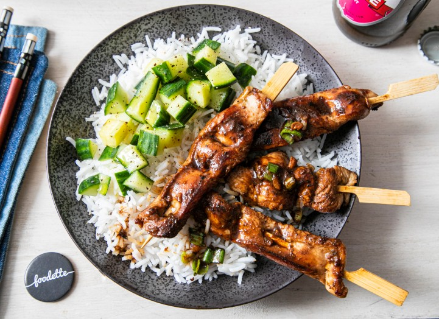

Bienvenue sur le site qui vous propose les meilleures recettes du monde entier !
Aujourd'hui, partons à la découverte de l'Asie et de ses saveurs sucrées salées
8
30 min
457 Kcal
2 escalopes de poulet
3 cl de sauce soja
10g de gingembre
2 c.à.s de vinaigre
2 c.à.c de sucre
Pour publier un avis